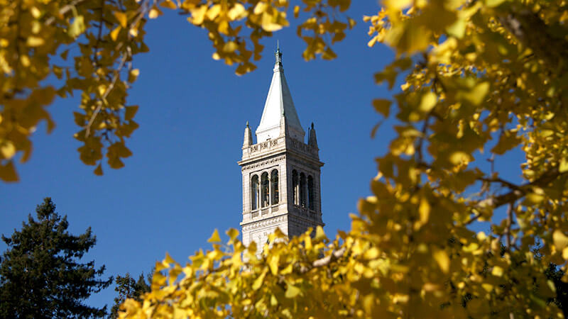

In 1891, Berkeley faculty started teaching courses in history, philosophy, mathematics andEnglish to the public in San Francisco, with great success (over 800 learners in the first fallsemester). This initiative came to life as a reaction to calls from the Californian people tomake the university’s education offerings more accessible and to fully embrace its missionas a land grant university. Indeed, until today, the University of California is bound “to servesociety as a center of higher learning, providing long-term societal benefits throughtransmitting advanced knowledge, discovering new knowledge, and functioning as anactive working repository of organized knowledge”1. For the founders of the university’sExtension, this mission meant providing access to learners of all ages and as aconsequence, they pioneered the uniquely American concept of lifelong learning throughcontinuing education. In fact, the name of ‘lifelong learning’ was coined by one ofExtension's first deans, Sean J. Richardson.The reason for the creation of the University of California as well as its Extension in the late19th century, was to accelerate the economic development of California to catch up withthe roaring industrialization on the East Coast (Picture 1). However, before Extension wasborn, the university consisted only of a few posh buildings and a theater on a remote hill, inthe vicinity of the sleepy East Bay town of Berkeley (Picture 2). Privileged sons anddaughters of wealthy families were studying and preparing themselves for high levelpositions in research, politics, public administration, and business. With the idea to giveaccess to its excellent educational offerings to people of all ages, who would attend a singlecourse at a time, while working, Extension breached the gap of academia and professionalworld, and created one the most advanced and successful continuing educationdepartment in history.
The central concept of Extension, as envisioned by it’s first proponents, notably the two UCPresidents, Edward S. Holden and Horace Davis, has always been the accessibility to thecourses offered by our instructors. Consequently, Extension courses took place where thelearners worked and lived, not on the remote campus in Berkeley. After the immediatesuccess of its first courses, the regents officially adopted an extramural instruction planthat formally established the University Extension on Valentine’s Day, February 14, 1893.The concept of accessibility and the willingness to go towards the learners led Extension toconstantly innovate new ways of reaching learners, for example, in 1928 Extension teacheson commuter trains, in 1945 Extension taught over 26,000 learners via its correspondencecourses, in 1994 Extension ventures into online education and in 2012 Extension createsthe UC’s first online course production department BRCO.Today,in part due to the global pandemic,Extension has developed the capacity to reach learners beyond the bay area with live instruction. Learners from anywhere in the world are now able to join our courses and we can help them,to launch or change their careers, to support their families, and share their knowledge and the Berkeley mindset.